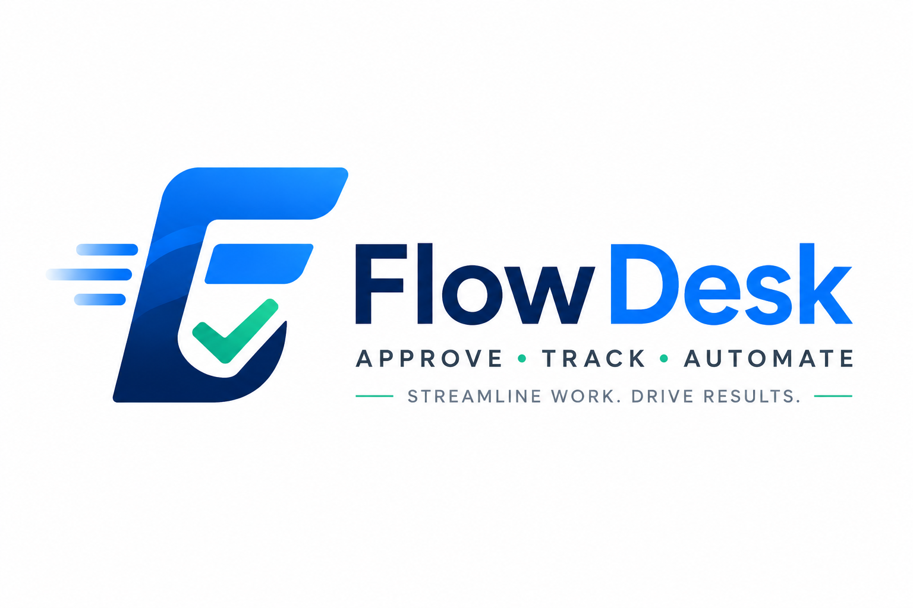

Web Application
FlowDesk — Enterprise Approval Workflow Management System
- Centralized system to manage requests, approvals, tasks, and workflows
- Improves transparency and reduces manual work
- Makes approvals faster and more efficient